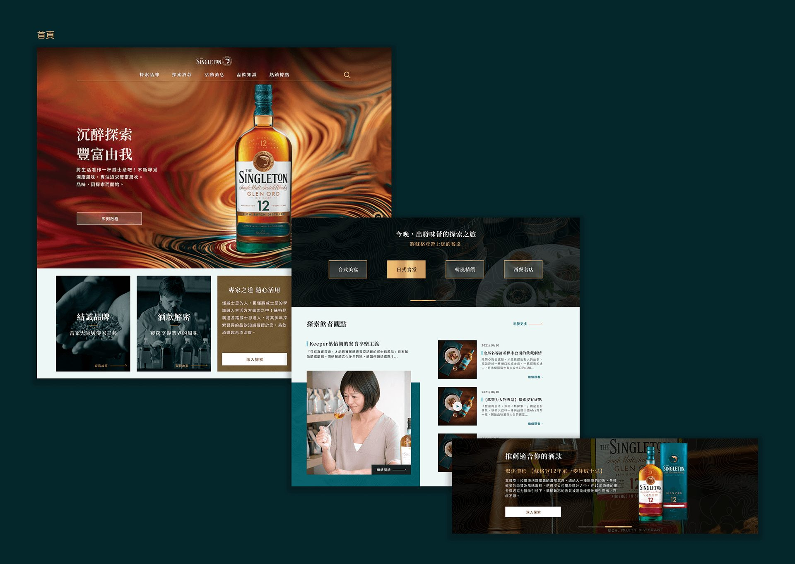
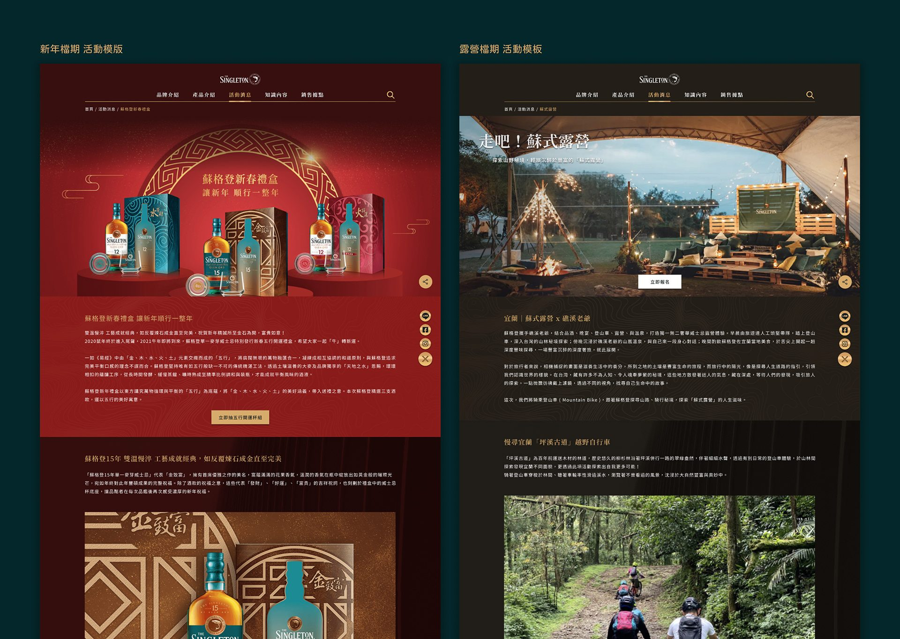
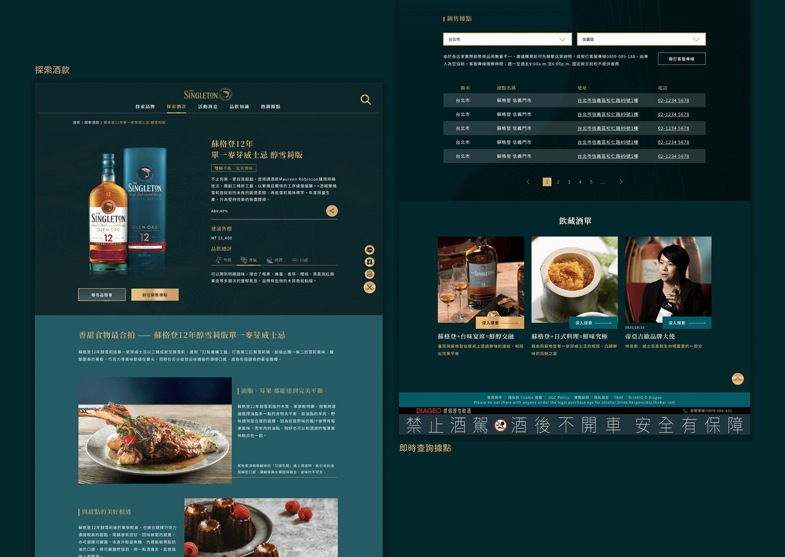

專案概述｜Overview
從 GA 數據出發重新檢視舊官網表現，重塑引導式體驗，讓品牌網站同時承擔品牌價值傳遞與商業導流的任務。
痛點洞察｜轉換路徑斷裂
從舊官網數據發現，使用者在核心轉換頁面（如查詢銷售據點、報名活動 / 品酩會、加入社群等）的進入率極低。現有架構缺乏直觀的導引機制與明確的行動呼籲（CTA），導致流量在瀏覽過程中流失，未能轉化為商業行動。
任務分析
透過 Task Prioritization 理解使用者對此類品牌網站的關鍵需求，識別出哪些高價值任務因認知成本過高而造成高跳出率。以此為基準重新定義全站導流路徑，篩選出高頻互動的核心功能，重新梳理資訊架構（IA）與主要操作流程（Main Flow）。
重整資訊架構
以五大重點功能為核心，建構對齊使用者認知的全站分類體系；提升關鍵入口能見度並佈局引導誘因，極小化操作摩擦力，優化使用者達成目標的關鍵路徑。
首頁｜善用首頁優勢，增加多元資訊模板
舊版首頁資訊密度不足且缺乏導引機制，使用者難以建立品牌認知。我們將原本資訊稀疏的入口重塑為具感官沉浸感的探索起點，透過互動引導驅動探索動機，實現品牌價值傳遞與數據蒐集的雙重目標。


產品頁｜豐富化生活型態的內容
透過情境式引導傳遞品牌價值；優化據點查詢動線，將產品探索轉化為具體的購買行動；並增加「飲藏酒單」區塊，由專家推薦延伸內容，建構完整的站內探索路徑。
